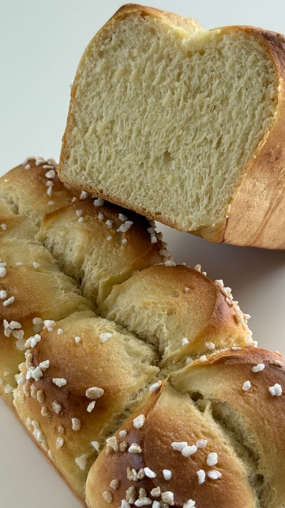
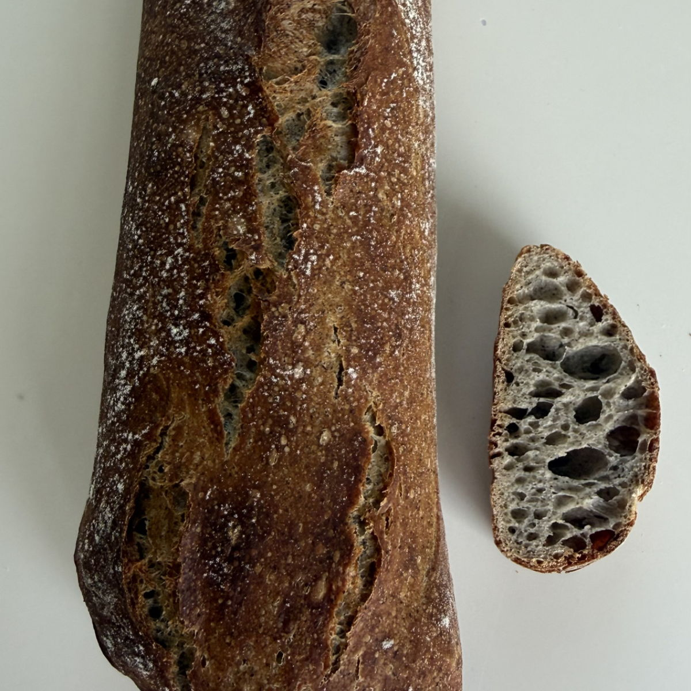
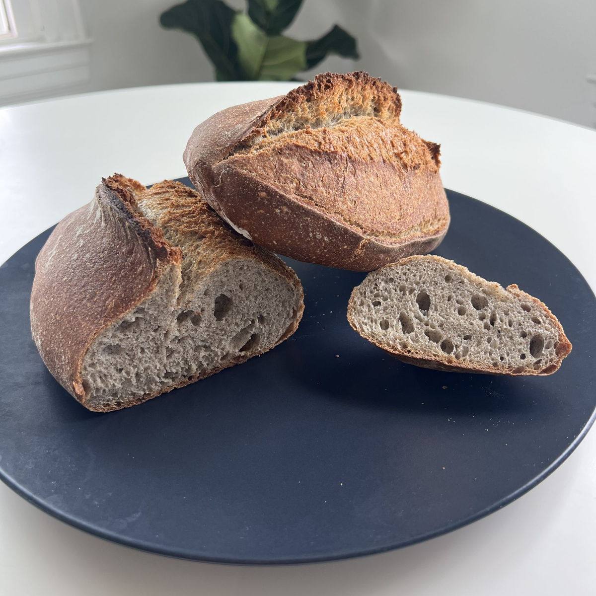
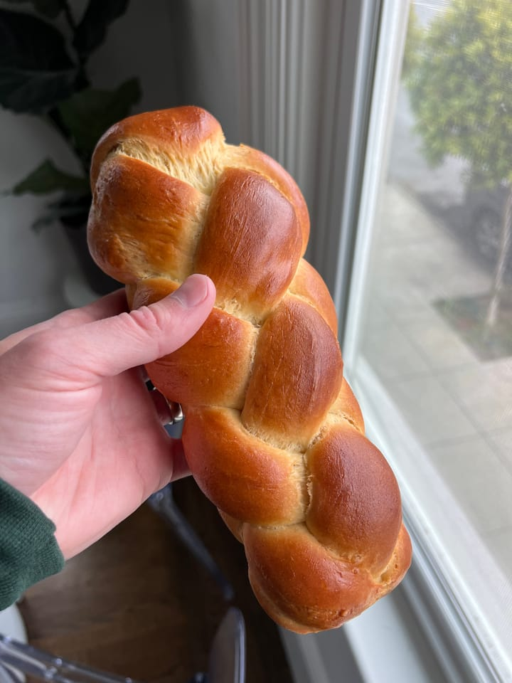
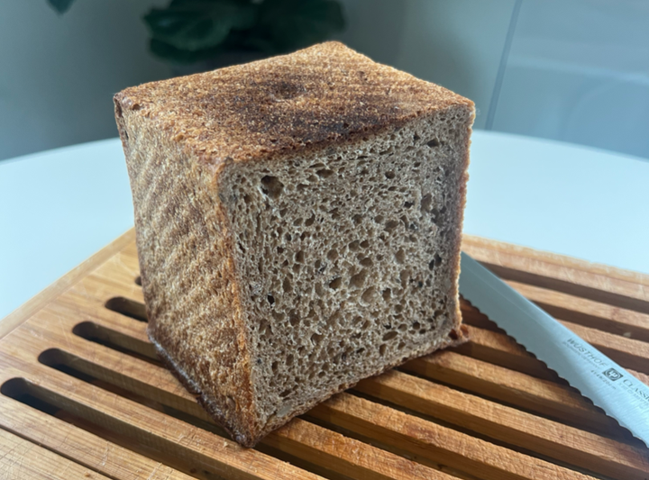
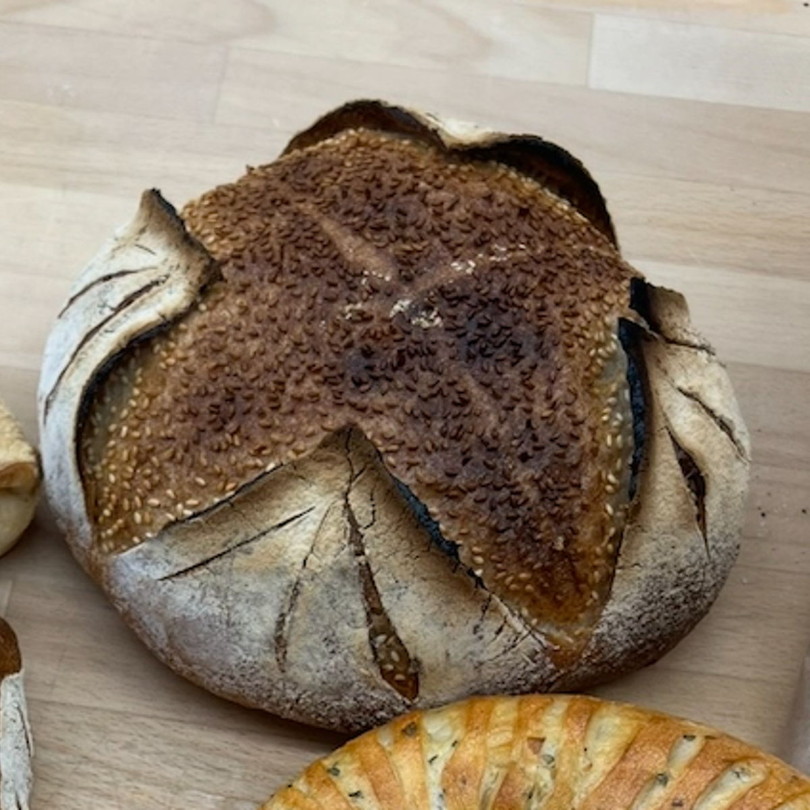
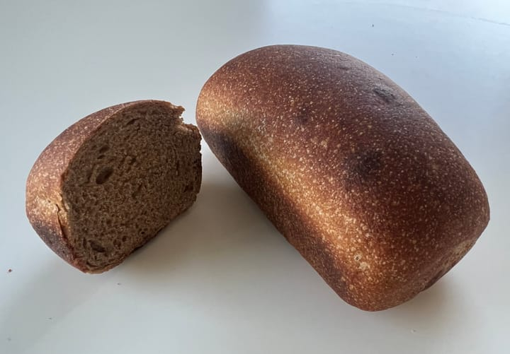
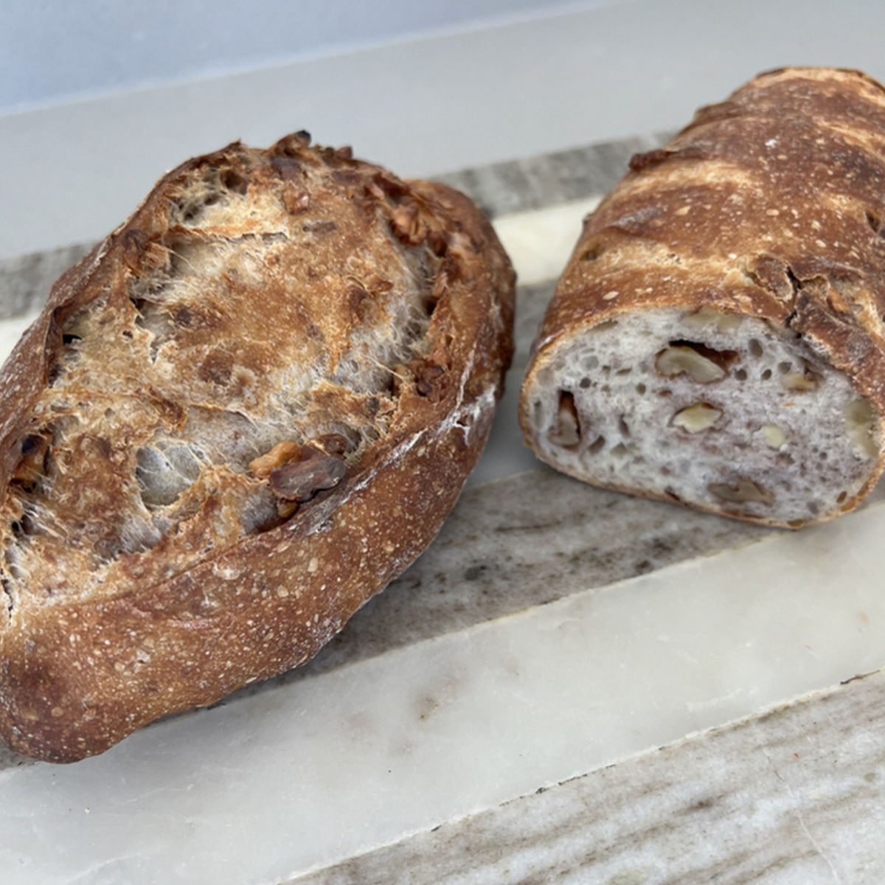
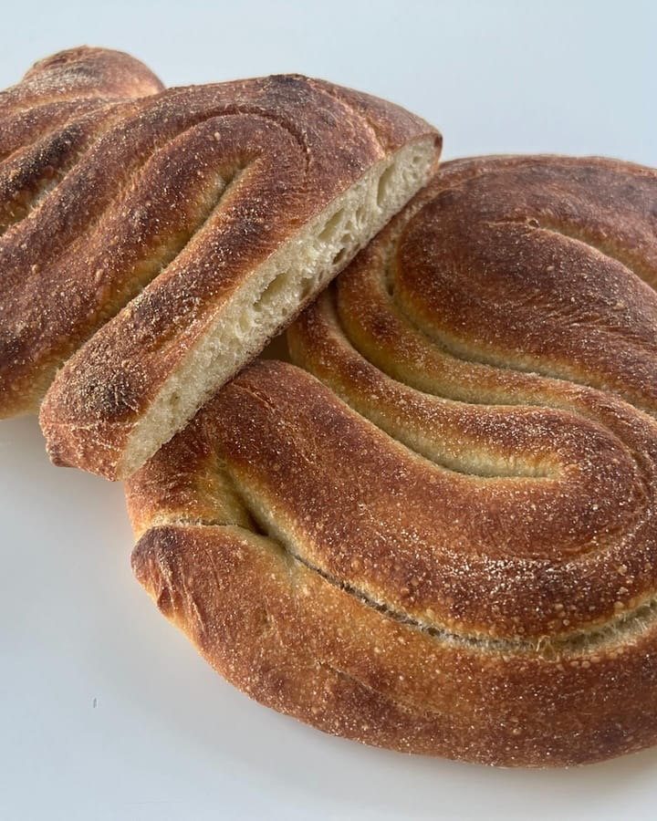
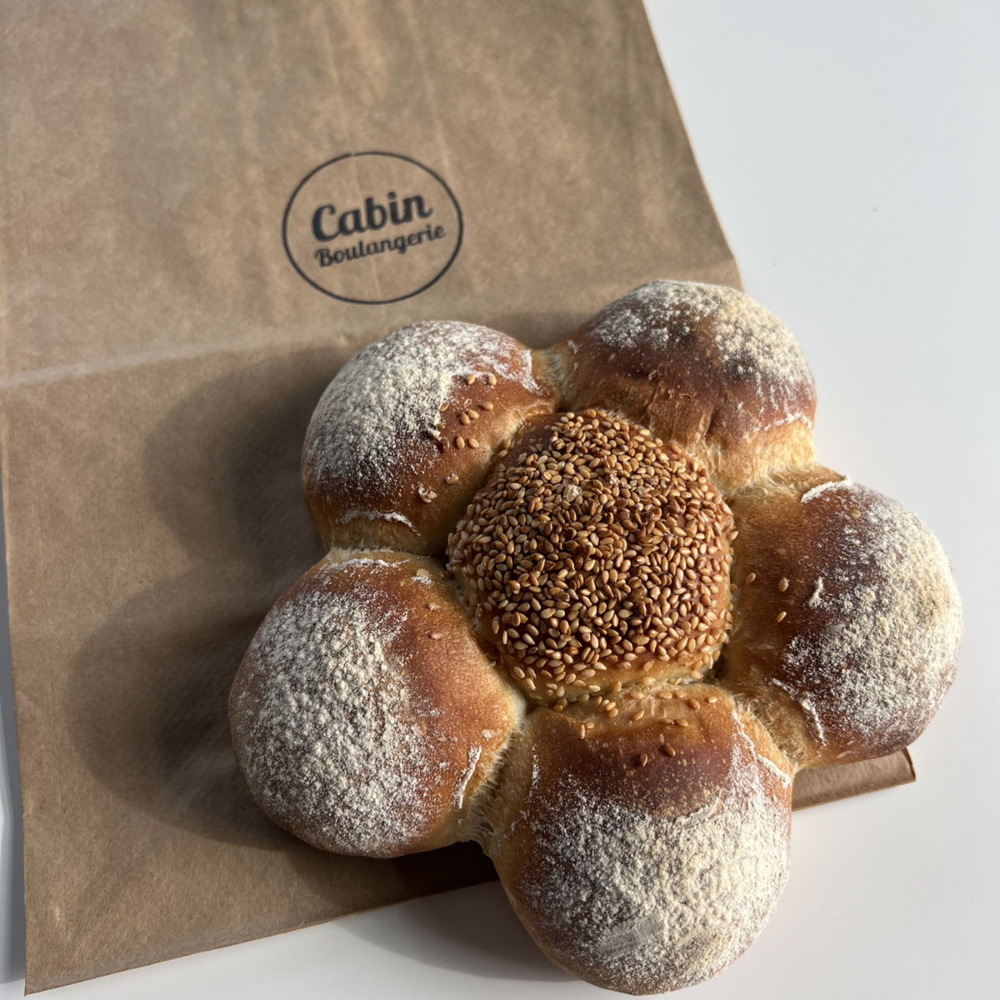

Baguette
Artisanal Sourdough Baguette made with Organic Wheat flour and Organic Whole Wheat flour.
“Great crust-to-crumb balance; crisp exterior, light interior, and good flavor.” — James D.
Artisanal Sourdough Baguette made with Organic Wheat flour and Organic Whole Wheat flour.
“Great crust-to-crumb balance; crisp exterior, light interior, and good flavor.” — James D.
Artisanal Sourdough Baguette made with Organic Wheat flour and Organic Whole Wheat flour. Shaped into an epi, an “ear of wheat,” for easy pull-apart pieces with crispy ends.
Artisanal Sourdough Bread made with Organic Wheat flour and Organic Whole Dark Rye flour.
“Soft, chewy inside, gorgeous crusty crust. Especially loved the pain de Campagne.” — Larisa S.

Artisanal Milk Bread made with Organic Wheat Flour, Organic Milk, Organic Eggs, Organic Cane Sugar, Butter and Pearl Sugar
“Great for thinly sliced French toast. Very filling.” — Alicia V.

Artisanal Sourdough Buckwheat Baguette made with Organic Wheat flour and Organic Buckwheat flour.

Artisanal Sourdough Buckwheat Bread made with Organic Wheat flour and Organic Buckwheat flour.
“A perfect balance of buckwheat earthiness and sourdough tang.” — Janet D.

Braided Brioche made with Organic Wheat flour, Organic Free-Range Eggs, Organic Cane Sugar, Butter and Organic Madagascar Vanilla.

Artisanal Whole Wheat Sourdough Sandwich Bread made with Organic Wheat Flour, Organic Whole Wheat Flour and Organic Seeds (Rye, Sunflower, Sesame, Brown Flax)

Artisanal Sourdough Bread made with Organic Wheat flour, Organic Whole Dark Rye flour and Sesame Seeds.

Small 100% Spelt Artisanal Sourdough Bread made with Organic Spelt flour

Artisanal Sourdough Bread made with Organic Wheat flour, Organic Einkorn flour and Organic Walnuts.

Artisanal Sourdough "S" Bread made with Organic Wheat Flour and Organic Semolina Flour

Artisanal Sourdough Daisy Dinner Rolls (6) made with Organic Wheat flour and Organic Whole Wheat flour. Contains Sesame.